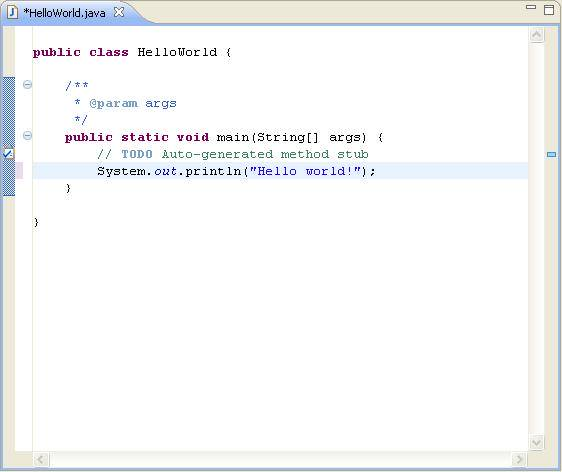

Lekcia 1: Úvod do Javy
Java je objektovo orientovaný programovací jazyk, ktorý v roku 1995 predstavila spoločnosť Sun Microsystems. Dnes patrí medzi najpoužívanejšie jazyky na svete vďaka svojej bezpečnosti a prenosnosti.
(more information) vznikla v rokoch 1991-1995
● James Gosling v Sun Microsystems
● dnes 4 „vetvy“ Javy:
● Java Card – pre „smart“ karty (SIM, …)
● Java ME – pre mobilné zariadenia
● Java SE – pre „bežné“ použitie (tu sme aj my)
● Java EE (Jakarta EE) – pre podnikové a biznis
aplikácie
● aktuálna verzia: Java 25 (LTS 25, 21, 17, 8)
● Android – postavený na Jave
Vývojové prostredie IDEA
programovať v Jave sa dá aj v Notepade, ale ...
IntelliJ IDEA (od JetBrains, community - free)
- moderné vývojové prostredie nielen pre Javu (Kotlin, Python, PHP, JavaScript, a ďalšie jazyky …)
- beží vo všetkých hlavných OS (Windows, Linux, macOS)
- Alternatívy: Eclipse (od IBM), NetBeans (študentský projekt z Matfyzu na UK v Prahe),
- má obrovskú podporu a množstvo dostupných pluginov
Prečo si vybrať Javu?
- Prenositeľnosť: Program beží na každom zariadení s Java Virtual Machine (JVM).
- Komunita: 1000+ knižníc a podpora od vývojárov po celom svete.
Váš prvý kód: Hello World
Tradičným začiatkom každého programátora je výpis textu na obrazovku. V Jave to vyzerá takto:
